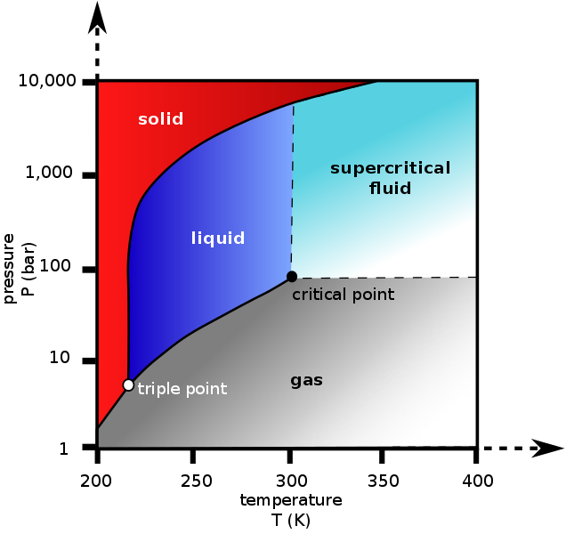
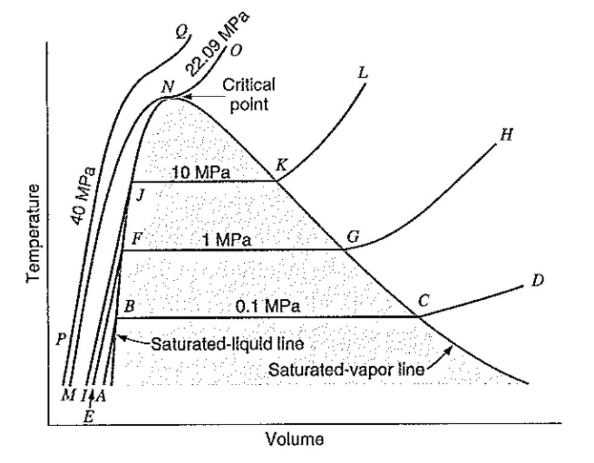
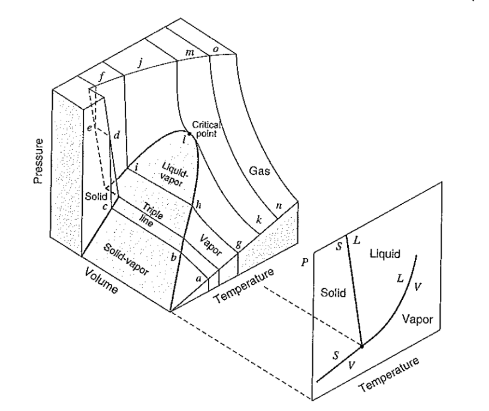
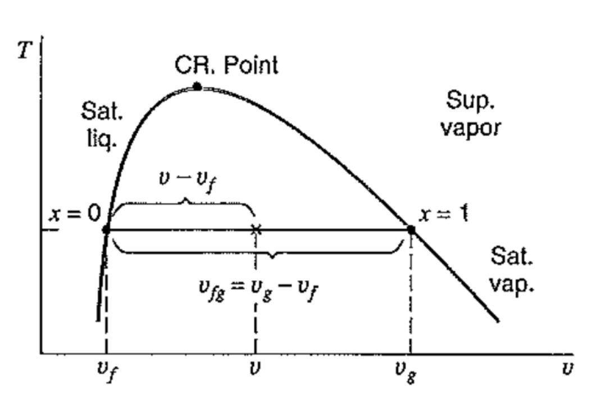

[Thermodynamics] Ch 2. Properties of a Pure substance
열역학
이라는 과목은,
ch1에서 배운, system안에서,
온도 압력
등을 파악하는 것이 목표다.
그렇다면, 먼저
system안의 물질에 따라서, 어떻게 온도가 달라질까?
이를 이해하기 위해서, Pure substance (순물질) 에 대해서 알아보자.
순물질:
Phases with a homogeneous and invariable chemical composition
핵심은, 물질에 여러 phase가 존재해도 상관은 없다.
하지만 phase가 여러개라면, 화학적 성질, 분자구조는 모두 동일해야한다는 것이다.
ex) 소금물은 소금,물 두개의 phase이며, 두개의 분자구조가 다르므로, 순물질이 아니다.
다시말해,
화학적 구조
가 같다면.
순물질에서는 여러가지 phase(고체,액체,기체)가 존재할 수 있다.
그렇다면, 화학구조가 같은 순물질에서
서로 다른 phases
들에 대해서 알아보자.
우리가 지금부터 살펴볼 그래프를
Phase diagram이라 하고,
압력,온도,부피에 따른 phase를 구분해서 표현되어 있다.
1. 압력-온도 그래프
![[Thermodynamics] Ch 2. Properties of a Pure substance](./images/img-001.png)
phases들은 삼중점과 3가지 선을 기준으로 고체,액체,기체로 나누어진다.
Liquid -> Solid 로 바뀔때, Metling line은
부피가 증가하면, 왼쪽(음의 기울기)
부피가 감소하면, 왼쪽(양의 기울기)
그리고 핵심적인 두 점.
1. Triple point
: 3가지 Phase가 모두 존재하는 state
2. Critical point
: 이 점보다 높은 압력에서는 액체가 기체로 변할때 상변화 과정이 없다.
즉, 끓는 현상 없이 액체가 기체로 바로 전환된다.
ex) Co2 P-T graph

이산화탄소 P-T Phase diagram
위 그래프에서 이산화탄소의 삼중점을 살펴보자. P triple point = 6~7 bar
즉, 대기압(1atm = 0.987bar)에서 고체 이산화탄소의 온도를 올려주면, 기체로 바로 전환
Dry ice 승화의 원리
2. 온도-부피 그래프

왼쪽(액체) 에서 오른쪽(기체)로 열을 가해준다고 생각해보자.( A ->B->C-> D)
먼저 A -> B는 액체의 온도가 올라가는 과정이다.
B->C 에서는 열을 가해줘도, 온도와 압력이 변하지 않는다. why???
상태변화가 일어나는 구간이기 때문에.
따라서,
B: Saturated Liquid
C: Saturated Vaopr
이라 부른다.
그 이후, C -> D 구간에서는 기체상태로 온도가 계속 높아져
C이상이 구간을 Superheated vapor이라고 부른다.
위 그래프를 다시 보면, 특정 압력이상시
Critical point
에 도달하게 된다.
이 점부터는 상태 변화로 인해 열을 가해도, 온도가 일정한 구간이 존재하지 않는다.
즉, 바로 액체 -> 기체로
자연스럽게
변화한다는 말이다.
잘 생각해보면 위 그래프는 참 많은 정보를 포함하고 있다.
Superheated vapor 영역에서
온도와 specific volume을 알고 있을때,
우리는 자동적으로 압력을 알 수 있다. (위 그래프에 오직 한점으로 존재)
3. P-T-V 그래프

물의 P-V-T graph
이제 우리는 P-T, T-v, P-v그래프를 알기 때문에,
3차원으로 다음과 같이 표현 할 수 있게 된다.
자 이제 그래프에 표시되있는 여러 Phase 들을 하나하나씩 특성을 살펴보자.
Two Phase states

액체와 기체가 공존하는 상태변화 구간은( Saturated vapor and liquid 사이)
Fluid가 얼마나 포함 되어있는지를 Quality,x를 통해서 나타낸다.
x = (v-vf)/vfg 로 얼마의 비율로 존재하는지로 나타낸다.
비율을 알게되면, vf, vg값들은 모두 표에 명시되어 있기 때문에,
mixed vapor and liquid의 v를 유도할 수 있다.
Liquid & Solid
incompressible flow즉
부피,밀도 변화를 무시해도 되는 phase이다.
따라서, 보통 Saturated liquid가 아니면, 모든 값들이 표에 표시되어 있지 않다.
따라서, 보통 같은 온도에 있는 Saturated liquid 값과 같다고 가정한다.
Super heated Vapor
Super heated vapor은 표에 모두 값들이 명시되어 있다.
값 : Thermodynamic properties.
Ideal gas
Superheat 의 경우, T-v, P-T 그래프를 살펴보았을때,
T-v에서, 압력이 일정할때, T와 V는 비례함을,
P-T그래프에서, T가 일정할때 P와 T는 비례함을 확인 할 수 있다.
따라서, 우리는 Pv = RT라는 기체상수를 사용하여 식으로 표현 할 수 있다.
그렇다면, 정확히 일반기체가 이상기체의 성질을 얼마나 띄는 것일까?
answer: Compressibility Factor(Z)
![[Thermodynamics] Ch 2. Properties of a Pure substance](./images/img-006.png)
즉, Z = 1에 근접할 수록, 기체는 이상기체의 성질과 가까워진다.
밑그래프는 다양한 기체의 경우Tr, Pr에 따른 Z를 표현한 그래프이다.
![[Thermodynamics] Ch 2. Properties of a Pure substance](./images/img-007.png)
Tr = T / T_c (T_c는 Critical T)
Pr = P / P_c(P_c 는 Critical P)
를 통해서 표현 할 수 있고, reduced temperature, pressure라고 부른다.
위 그래프를 보면, Tr은 크면 클수록, 혹은 Pr = 0에 가까워질수록,
Z=1 에 가까워지는 것을 확인 할 수 있다.